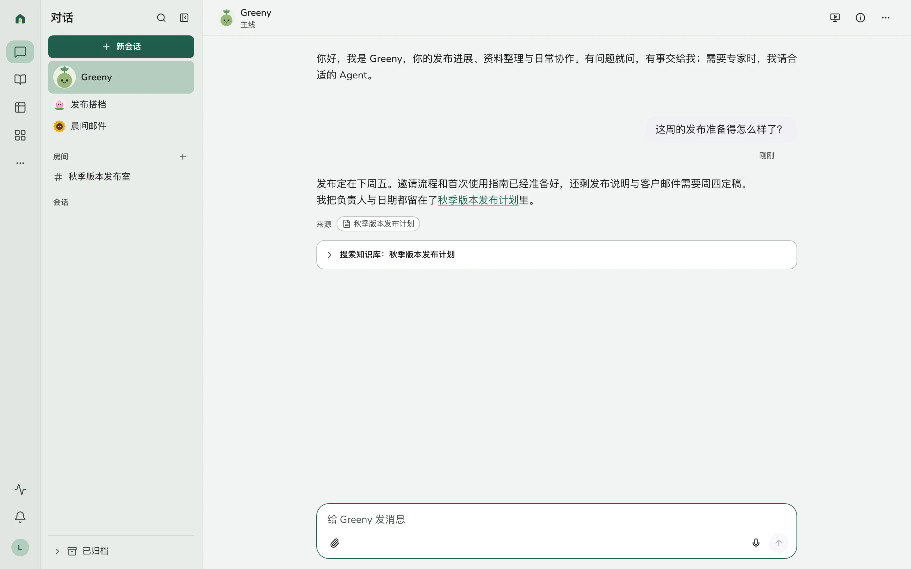

对话与后台运行
主线、Agent 对话、会话与房间各有位置。长工作交给后台运行；过程、需要你的决定与最终结果都能找到。
 Greenhouse
Greenhouse
开源 · 自托管 · v2 预览
每个成员有自己的 AI 同事，在同一份知识、表格与应用上协作。数据留在自己的服务器，行动遵守同一套权限。
v2.0 正在交付验收中，尚未发布。v2 使用全新数据库；现有 v1 部署请先看迁移指南。

主线、Agent 对话、会话与房间各有位置。长工作交给后台运行；过程、需要你的决定与最终结果都能找到。
文档、文件、版本与评论在一棵树里。表格支持多种视图、表单、自动化与角色权限；应用直接建立在它们之上。
Agent 工具、网页和外部 MCP 客户端调用相同服务。写入按审批分级；外部操作要确认，可逆结果保留撤销凭据。


Docker Compose 启动 Postgres、迁移和 Web／API。先设置管理员邮箱与模型服务，再从日志中的一次性链接激活账号。
git clone -b v2 https://github.com/linjiejim/greenhouse.git
cd greenhouse
cp .env.example .env
./scripts/gen-secrets.sh
# Set BOOTSTRAP_ADMIN_EMAIL and LLM_* in .env
docker compose -p greenhouse-v2 up -d --build模型、搜索、语音、图像、视频、存储、电脑和邮箱均可配置。Compose 的 Agent 电脑使用 E2B 兼容服务；SMTP 只发信，Resend／Mailgun 可接收 Agent 邮件。